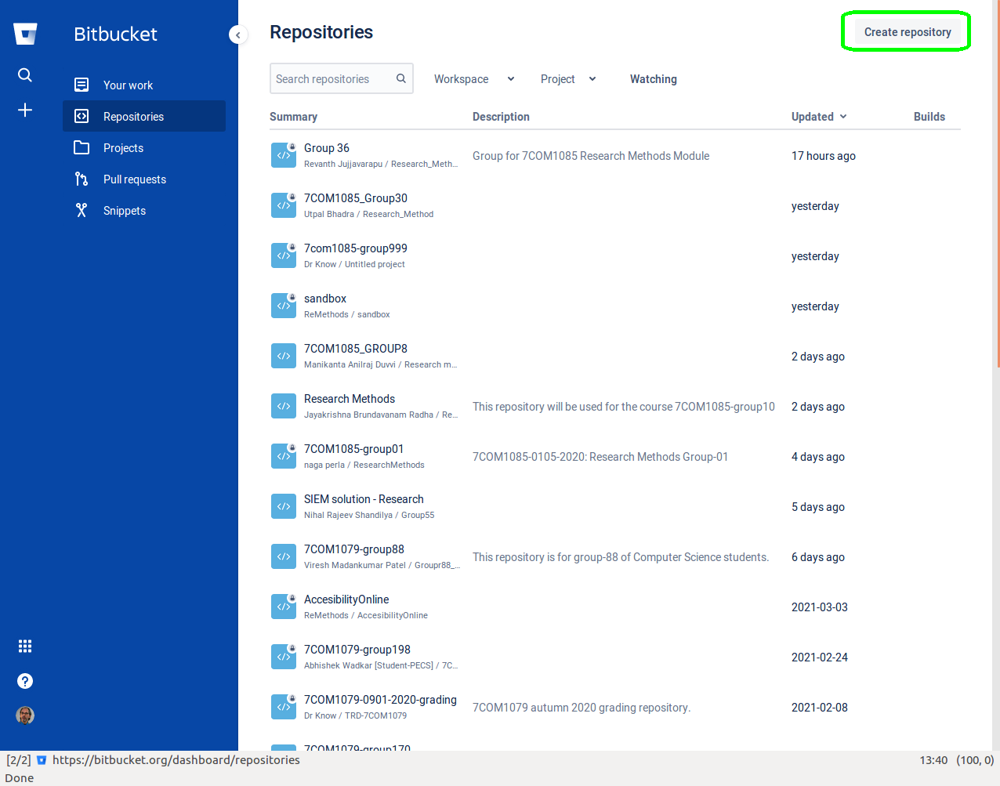
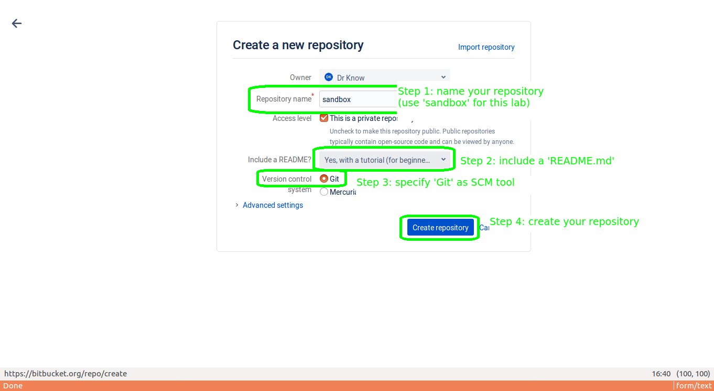
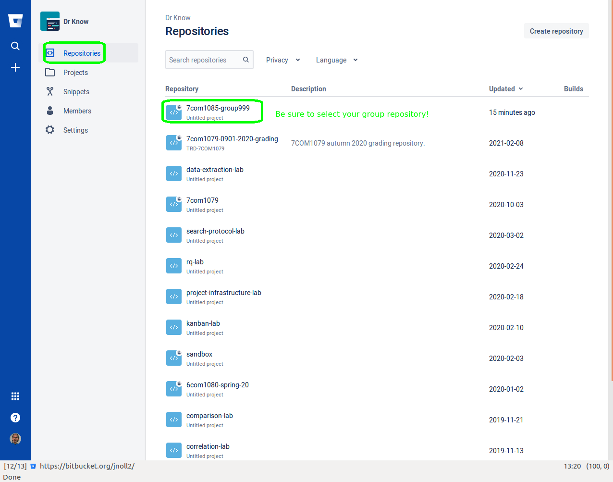
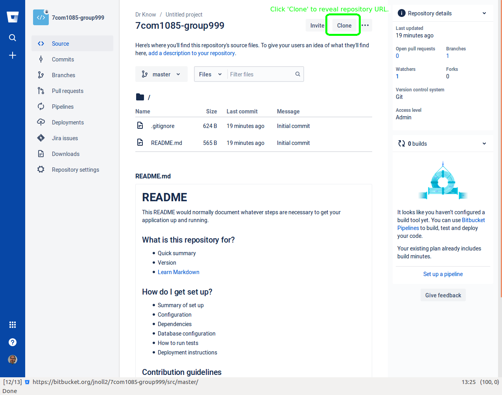

7COM1085 – Research Methods
herts.ac.uk email account, so you can have more than five (5) members of your repository (this is necessary so you can invite members of the module team to join).Also, be sure you can actually read messages sent to this account, because you will have to confirm your account registration by following a link from an email message that Bitbucket will send to your herts.ac.uk email address.
Create a new repository to experiment with Git and Bitbucket: select the “Create repository” button in the upper right corner:


Install Notepad++. There is a Notepad++ package in the University of Hertfordshire Software Centre for Herts lab computers.
To install on your own laptop and/or home computer, visit https://notepad-plus-plus.org/downloads/, choose the latest release #(at the top), and follow the Installer link.
Install Git.
There is a Git package in the University of Hertfordshire Software Centre for Herts lab computers (if Git is not available from the Software Center, you can download the standalone executable from https://git-scm.com/download/win).
To install on your own laptop and/or home computer, visit https://git-scm.com/downloads to get the download package for your architecture.
Open a command window1: click the “start” button and type “cmd”; this will open a black window with white text officially called the “Windows Command Shell.” Most people call it a “DOS Box” because it’s based on the MS-DOS2 command.com shell that was the user interface for the MS-DOS console.
Not familiar with MS-DOS commands? Read the “Windows Command Prompt in 15 Minutes” tutorial (https://www.cs.princeton.edu/courses/archive/spr05/cos126/cmd-prompt.html),
Prefer to watch rather than read? Try this YouTube video: https://www.youtube.com/watch?v=MBBWVgE0ewk
Then, use what you’ve learned to navigate to your “home” directory, create a directory called “experiments”, change to this directory, create a file there using Notepad++, then view the contents of the file using more and type.
Configure Git to use Notepad++ as the default editor: in your DOS Box, type:
git config --global core.editor "'C:/Program Files/Notepad++/notepad++.exe'
-multiInst -notabbar -nosession -noPlugin"If you don’t do this step, the default editor will be vi, which is very powerful but not easy to learn.
Clone your repository.


Ctrl-V).Change to the directory you just created above (it should be called ‘sandbox’):
cd sandbox
dirYou should see README.md in the directory listing.
Configure your Git identity: in your DOS Box, type (use YOUR_FIRST_NAME and YOUR_LAST_NAME as they appear on Canvas):
git config user.name "YOUR_FIRST_NAME YOUR_LAST_NAME"git config user.email “YOUR_USERNAME@herts.ac.uk”
It is essential that you use your Herts email address for this step, so we can score your Git commits properly.
It is also essential that you do this every time you clone a repository; otherwise you won’t get credit for your contributions to your groups effort.
It is possible to configure user.name and user.email globally, using the --global switch:
git config --global user.name "YOUR_FIRST_NAME YOUR_LAST_NAME"git config --global user.email “YOUR_USERNAME@herts.ac.uk”
This will configure your identity for all of your repositories.
Use Notepad++ (not Notepad, not Word) to edit README.md: put some new text (maybe your name?) in this file and save it.
Add README.md to the list of files staged for commit.
git add README.mdNote: Never, ever use git add -A: this will add every file in the directory to the next commit, including editor backup files, execution logs, etc. that you don’t want in your repository.
Verify the staged commit.
git statusCommit your changes.
git commitThis should open Notepad++ with a commit log message (if not, you did not configure Git correctly when you installed it. Type ‘ESC’ then ‘q!’ and configure Notepad++ to be the Git editor; then, repeat this step.) Write a meaningful message for the commit log.
Push your changes to Bitbucket.
git push origin masterVerify your push. Visit your Bitbucket repository’s URL; you will see the newly committed contents of your README.md file.
Merge conflicts happen when two developers make changes to the same line in the same file: Git will not know which change to keep, so it forces a human to make the decision.
Clone another copy of your sandbox.
cd ..
git clone https://bitbucket.org/yourusername/sandbox.git sandbox2` Note the sandbox2 at the end of the above command string: this tells get to clone the remote repository into a directory called sandbox2 (rather than sandbox); this allows you to clone multiple copies of your repository into the same parent directory. If you type dir you should see both sandbox and sandbox2 in your working directory.
Edit your original README.md. Open README.md in the sandbox workspace, and add a new line with random text at the top. Save these changes, then do:
cd sandbox
git add README.md
git commit -m "Added text for conflict tutorial."Edit your new README.md. Open README.md in the sandbox2 workspace, and add a new line with different random text at the top. Save these changes, then do:
cd ../sandbox2
git add README.md
git commit -m "Added text for conflict tutorial."
git push origin masterCreate a merge conflict.
cd ../sandboxgit pull
This should result in an error message, something like the following:
[jnoll@grindstone] ~/scratch/sandbox: git pull
remote: Enumerating objects: 5, done.
remote: Counting objects: 100% (5/5), done.
remote: Total 3 (delta 0), reused 0 (delta 0)
Unpacking objects: 100% (3/3), 228 bytes | 228.00 KiB/s, done.
From https://bitbucket.org/jnoll2/sandbox
acf6276..ba30313 master -> origin/master
Auto-merging README.md
CONFLICT (content): Merge conflict in README.md
Automatic merge failed; fix conflicts and then commit the result.Open your original README.md in Notepad++. You should see the conflict marked something like the following:
<<<<<<< HEAD
Random text in original README.md
=======
Random text in second README.md
>>>>>>> ba3031316648a9621ad658aad9380b525d01e627“HEAD” refers to the current workspace, while ba3031316648a9621ad658aad9380b525d01e627 is the commit ID from the remote workspace where the conflict occurs. You will need to choose which line to keep (or, maybe you want to keep both!), then remove the other lines.
So, for example, if I want to keep the second change, I would delete lines 1, 2, 3, and 5 to yield:
Random text in second README.mdSave your changes.
Commit your changes.
git add README.mdgit commit -m “Resolved merge conflict.”
Push your changes.
git pullgit push origin master
Pull your changes into sandbox2.
cd ../sandbox2git pull
Now, if you open README.md in the sandbox2 workspace, you should see the same contents as are in the sandbox workspace.
Now, follow Bitbucket’s Git Tutorial which provides an excellent, entertaining introduction to each of the major Git commands.
Note: you should avoid branches this semester: they are a powerful but somewhat dangerous feature of Git that you won’t need.
The objectives for this exercise are to create and populate a Kanban board using Trello
Clone the bitbucket repository:
git clone https://bitbucket.org/jnoll2/kanban-lab.git
Follow the instructions in the README.md file of the repository.